地政学
オアハカはメキシコ南部の山地と太平洋側、中央高原を結ぶ谷の州都です。首都から離れた地域中心であり、先住民自治、移住、観光、農村経済、道路網が重なります。周辺村との関係が都市の力です。山の道も重要です。

🇲🇽 メキシコ / 北米 / World City Atlas
オアハカは、植民地期の石造りの街路、サポテカとミシュテカの記憶、先住民言語、モレとメスカル、織物と陶器、死者の日の祭礼が重なる高地都市です。観光の美しさの背後には、水、地震、住宅、工芸労働の課題もあります。
都市の骨格
オアハカは山に囲まれた谷の都市です。旧市街、周辺村、モンテ・アルバン、市場、工房、メスカルの産地が近く、都市の魅力は中心部だけでなく、広い先住民地域との往復から生まれます。
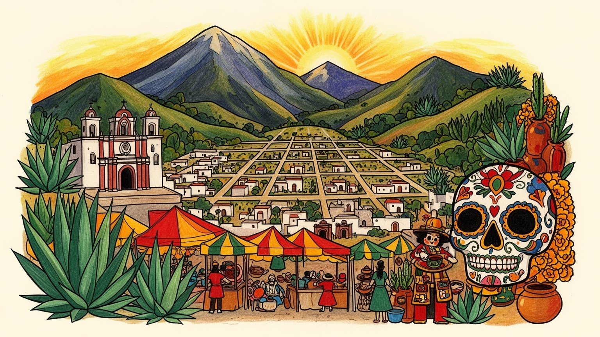
オアハカはメキシコ南部の山地と太平洋側、中央高原を結ぶ谷の州都です。首都から離れた地域中心であり、先住民自治、移住、観光、農村経済、道路網が重なります。周辺村との関係が都市の力です。山の道も重要です。
観光、行政、教育、飲食、市場、工芸、メスカル、農産加工が雇用を作ります。人気が高まるほど宿泊、ガイド、工房、屋台は忙しくなりますが、家賃や材料費、観光客向け価格の上昇も暮らしに響きます。価格差も見えます。
サポテカ、ミシュテカなどの先住民文化、カトリック、祖先儀礼、死者の日、村祭り、市場の言語が都市の時間を作ります。文化は展示物ではなく、家族、村、食、工芸、祈りの中で生きています。日常の暦でもあります。
旧市街、サント・ドミンゴ周辺、市場、モンテ・アルバン、工房巡りは訪問の入口です。一方で住民には水不足、地震リスク、住宅価格、観光圧、道路混雑、若者の移住が身近な負担として残ります。水と住まいも焦点です。
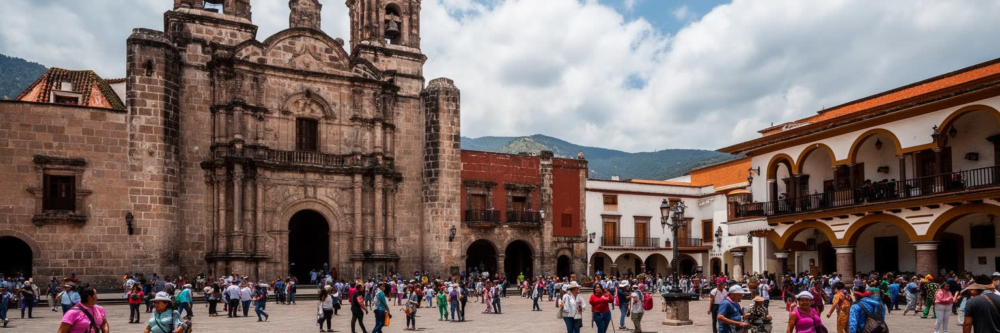
オアハカ旧市街は、石造りの教会、低い建物、広場、回廊、色の濃い壁、山の光がつくる落ち着いた都市景観で知られます。中心部は世界遺産としても語られ、サント・ドミンゴ周辺やソカロには旅行者、学生、職人、屋台、政治的な集会、家族連れが集まります。植民地期の街並みは美しい観光資源ですが、その美しさは単純な過去の保存ではありません。古い建物はホテル、レストラン、ギャラリー、学校、住宅として使い直され、家賃や商業化の圧力を受けています。中心部が旅行者向けに整うほど、住民の生活費や日常の買い物、騒音、交通、公共空間の使い方が変わります。旧市街を歩くときには、石畳と教会の構図だけでなく、清掃員、売り子、警備、厨房、修復職人、デモに参加する人の姿も見る必要があります。広場は祝祭だけでなく抗議や追悼の場にもなり、照明、歩行者空間、露店規制は日々の政治です。朝の搬入、昼の観光、夜の飲食は同じ通りを使い、楽団の音、バスケットやサッカーを終えた若者、学校帰りの子どもも混ざります。ラジオや地元紙、店主のSNSは、集会、交通規制、祭礼、閉店情報を素早く伝えます。オアハカの旧市街は、きれいな歴史地区であると同時に、観光、政治、生活が交渉を続ける現役の都市中心です。保存の価値は、住民がそこに関われるかどうかで大きく変わります。
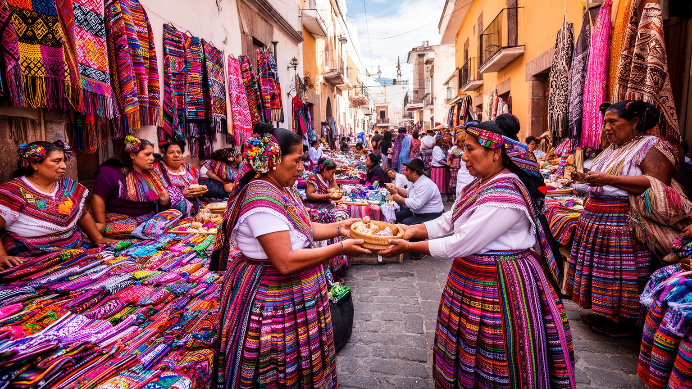
オアハカを理解するには、中心市街だけでなく周辺の先住民地域を見なければなりません。州内にはサポテカ、ミシュテカ、ミヘ、マサテコ、チナンテコなど多様な言語と共同体があり、村の祭り、市場、織物、陶器、食、自治の仕組みが都市と結びついています。オアハカ市はそれらの文化を展示する場所ではなく、人、商品、政治、教育、医療、観光が集まる結節点です。村から来る人は市場で売り、学校へ通い、役所へ行き、病院を使い、祭りの準備で都市と村を往復します。観光は先住民文化への関心を高めますが、外から見て分かりやすい色彩や衣装だけが消費される危険もあります。言語、土地権、移住、教育、女性の労働、共同体の意思決定は、写真には写りにくい焦点です。都市の学校や病院、バスターミナル、役所では、複数の言語と生活習慣が交差します。若者が都市で学び、村へ戻るか、観光業や海外移住へ向かうかも地域の将来を左右します。子どもが母語を学ぶ教室、村へ戻るバス、高齢者が医療通訳を頼む場面は、文化を日常の制度として見せます。都市で差別を受けずに言語を使えるか、役所や医療で説明を受けられるかは、尊重を測る具体的な点です。工芸品の美しさだけでなく、それを誰が作り、どの村の資源で、どの価格で売り、収入がどう分配されるのかを見る必要があります。都市の魅力は村の文化に支えられ、都市はその文化を公正に扱う責任を持ちます。
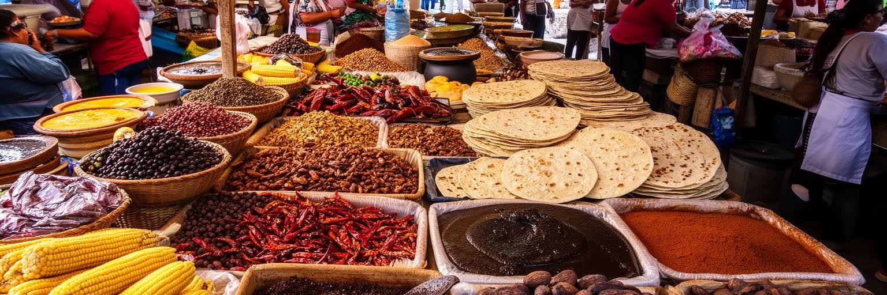
オアハカはメキシコの食文化を語るうえで欠かせない都市です。モレ、トラジューダ、トウモロコシ、豆、チレ、カカオ、チーズ、メスカル、昆虫食、ハーブ、果物が、市場と家庭と祭礼を結びます。観光客にとって市場は色彩豊かな体験ですが、住民にとっては毎日の食材、家族の収入、村からの物流、季節の価格を知る場所です。食は一皿の名物ではなく、農地、山村、女性の調理労働、屋台、仕込み、市場の信用、祭りの供物を含む広いシステムです。料理教室や高級レストランが食文化を世界に広げる一方で、食材の価格上昇や観光客向けの演出が地元の食卓を圧迫することもあります。市場を歩くと、スペイン語だけでなく先住民言語も聞こえ、村ごとの食材や調味の違いが見えてきます。粉を挽く店、肉を焼く通路、チョコレート工房、朝食の屋台、薬草や学校用品の売り場は、観光名所である前に住民の台所と商店街です。季節の雨や道路事情が農産物の値段を変え、家計の負担にも直結します。家族経営の食堂では、仕入れ、下ごしらえ、接客、片付けが長い一日の労働になり、味の評価だけでは測れない負担があります。オアハカの食を読むには、味の豊かさだけでなく、誰が種を守り、誰が朝早く仕込み、誰が市場の場所代を払い、誰が観光客の好みに合わせて変化しているのかを見ることが大切です。市場の匂いと値段表は、都市と農村をつなぐ経済の核心です。
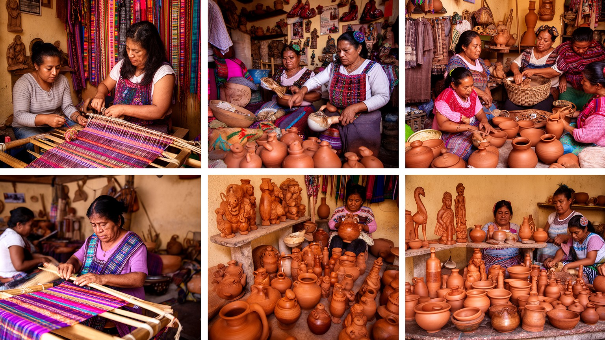
オアハカの工芸は、織物、陶器、木彫、金属、刺繍、染色、紙、籠など多岐にわたります。旅行者は市場や工房で美しい品を買いますが、その背後には家族単位の労働、村ごとの技法、材料の調達、仲買、観光店との交渉、模倣品との競争があります。手仕事は伝統の象徴であると同時に、現金収入を得るための現代的な産業でもあります。人気が高まるほど注文は増えますが、納期、価格交渉、材料費、デザインの変更、観光客の好みに合わせる圧力も強まります。若い世代にとって工芸は誇りある仕事になり得る一方、十分な収入にならなければ都市や国外への移住を選ぶ理由にもなります。工房は販売の場所だけでなく、子どもが技法を見て覚える学校でもあります。観光客の値引き交渉、写真撮影、模倣デザインの流通は、作り手の尊厳と収入に直接関わります。自然染料や粘土、木材の入手は環境の変化にも左右され、材料の値上がりは作品価格へ跳ね返ります。オアハカの工芸を読むには、完成品だけでなく、染料を作る時間、糸を準備する手間、店頭に立つ家族、オンライン販売、観光ガイドとの関係まで見る必要があります。工芸品の価値は、珍しさや写真映えだけで測れません。作り手が価格を決め、技法を継承し、生活を支えられるかどうかが、文化の持続性を左右します。都市の観光経済は、村の手仕事に深く依存しています。
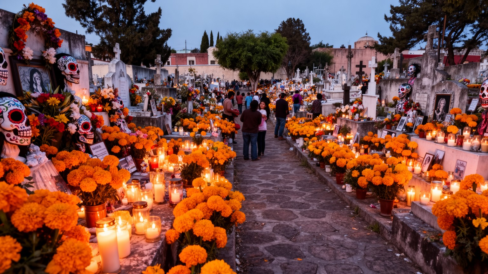
オアハカの死者の日は、世界的に知られる祭礼であり、家族の記憶、カトリック、先住民的な祖先観、花、食、音楽、墓地の夜が重なります。旅行者にとっては強烈な色彩と幻想的な時間ですが、地域の人にとっては亡くなった家族を迎え、語り、供物を整え、墓を掃除する大切な暦です。観光客が増えるほど、宿泊費、交通、墓地の混雑、写真撮影の距離感、商業化の負担も大きくなります。祭礼は外から見て美しいほど、家族の私的な時間と公共の観光空間が近づきます。花を育てる農家、パンを焼く店、ろうそくや紙飾りを売る市場、夜間の移動を支える運転手も、この時期の都市を動かします。墓地では撮影できる場所と控えるべき場所を見極める感覚が必要です。祭壇づくりは数日前から始まり、買い出し、掃除、料理、親族の移動、子どもへの語り聞かせが重なります。ブラスバンドや通りの音楽は夜を明るくしますが、喪失を抱える家族の時間を乱さない距離も大切です。死者の日を読むには、仮装や装飾だけでなく、誰が花を買い、誰がパンを焼き、誰が祭壇を作り、誰が墓地で夜を過ごし、誰が観光客の案内で働くのかを見る必要があります。祭礼は死を消費するための演出ではなく、家族と共同体が記憶を保つ仕組みです。同時に、観光収入が多くの人の生活を支える現実もあります。大切なのは、祭礼を外から楽しむ視線と、地域の祈りを尊重する姿勢を両立させることです。光景の背後には、喪失と生活の両方があります。
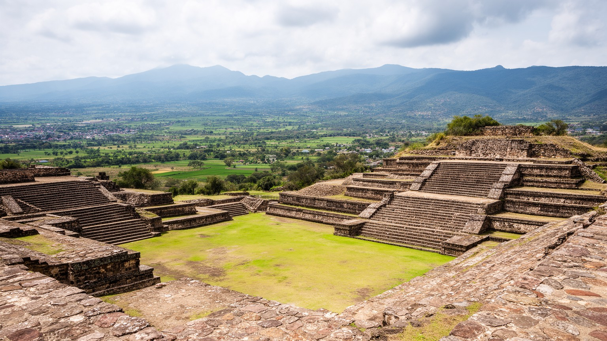
オアハカ近郊のモンテ・アルバンは、サポテカ文明の古代都市として、現在のオアハカ市を見下ろす山上に広がります。広場、基壇、墓、石彫、谷を見渡す眺望は、オアハカが植民地期の都市として始まったわけではなく、より長い都市と権力の歴史の上にあることを示します。観光客は日帰りで遺跡を訪れますが、その意味は単なる名所見学ではありません。古代都市の記憶、先住民の歴史、考古学、土地の所有、周辺コミュニティ、観光収入、保存の責任が重なります。遺跡が有名になるほど、訪問者数、交通、売店、ガイド、保全費用、地元の説明権が重要になります。学校教育やガイドの語り方によって、古代都市は誇りの源にも、外部向けの商品にもなります。斜面の浸食、日差し、雨、来訪者の歩行は、遺跡保存の具体的な負荷です。市内からの交通、入場料、博物館の展示、周辺村の参加は、遺跡体験を形作る実務です。保存が厳格になるほど、近隣の土地利用や商売にも調整が必要になります。誰が歴史を語り、どの言語で説明し、収入がどこへ戻るのかは、文化遺産をめぐる政治でもあります。モンテ・アルバンを読むには、石の遺構だけでなく、現在のオアハカ市と周辺村がその遺産をどう共有し、観光と教育にどう使っているのかを見る必要があります。古代都市は過去に閉じた場所ではなく、現代の都市が自分の起源と向き合う場所です。谷を見下ろす視点は、オアハカの長い時間を一望させます。
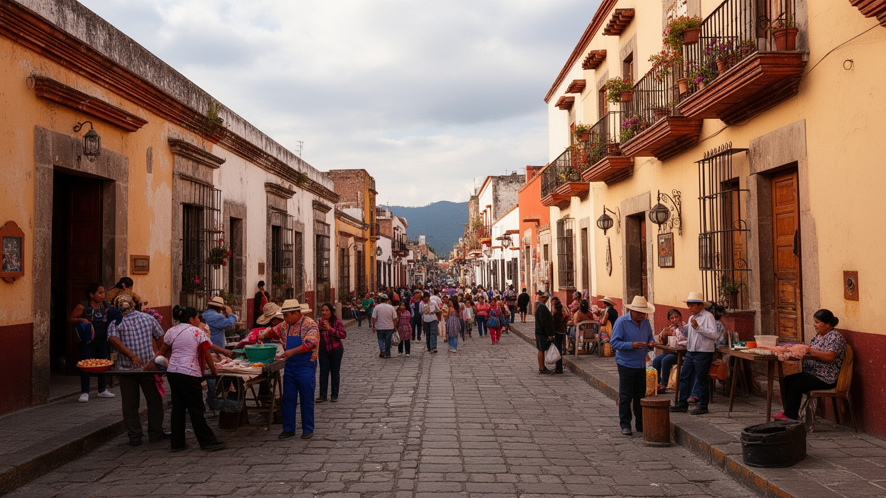
オアハカは近年、世界的な旅行先として注目を集め、レストラン、ホテル、短期賃貸、ギャラリー、カフェ、ツアーが増えました。観光は収入と雇用を作り、工芸や食文化を広める力になりますが、人気の高まりは住宅価格、家賃、物価、旧市街の商業構成を変えます。中心部の家が宿泊施設に変われば、住民は郊外へ移らざるを得ない場合があります。飲食店が旅行者向けになるほど、地元の人が使う店や市場の位置づけも変わります。観光客の多い街路では、写真撮影、騒音、ごみ、交通、公共空間の使い方をめぐる摩擦が起きます。一方で、観光に依存する家族経営の店やガイドにとっては、訪問者の減少も大きな打撃です。短期賃貸の増加、英語向けの店舗、外部資本の流入は、住民の感覚から見ると街の速度を変える出来事です。抗議の声が出るのは観光そのものへの拒否ではなく、利益と負担の配分を問う動きでもあります。若者の雇用は増えても、賃金が家賃上昇に追いつかなければ、中心部で暮らす選択肢は狭まります。学校、病院、サッカー場、市場へ向かう住民の移動も、観光バスや配車の流れとぶつかります。地元メディアや住民のSNSは、賃貸、騒音、祭礼規制、抗議の予定を共有する生活情報網です。オアハカの観光圧を読むには、収入、文化の可視化、住宅、労働、公共空間を同じ地図に置く必要があります。大切なのは、街が外から愛されるほど、住民が住み続ける権利をどう守るかです。観光の成功は、地域の暮らしを弱くする形では長続きしません。
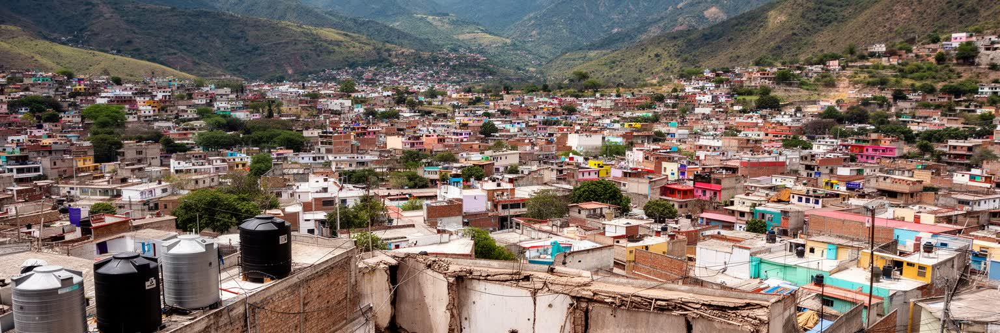
オアハカの生活課題には、水と地震があります。高地の谷にある都市では、乾季と雨季の差、水道の安定、貯水、地下水、周辺村との水利用が暮らしに直結します。観光が増えると、ホテル、飲食店、洗濯、清掃、トイレ、庭の管理で水の需要も増え、住民の供給不安とぶつかることがあります。水は見えにくいインフラですが、毎日の家事、屋台、工房、宿泊業を支える基本条件です。また、オアハカ州は地震の影響を受けやすく、古い石造建築や住宅、学校、教会、市場の安全も重要です。地震後の修復は文化財を守る作業であると同時に、住民が早く生活を取り戻すための実務でもあります。家庭の屋上タンク、給水車、井戸、雨季前の修理は、住民には身近な備えです。乾季に観光需要が高まると、水の不公平はより見えやすくなります。古い住宅では耐震補強と家計の余裕が結びつき、文化財ほど注目されない住まいの修理が遅れることもあります。観光客は修復された街並みを見ますが、その背後には建築職人、自治体、家族、保険、資金不足、仮住まいの事情があります。断水の日には学校の給食、屋台の仕込み、高齢者の通院、子どもの手洗いまで影響を受けます。オアハカを読むには、色彩豊かな文化だけでなく、水道、耐震、避難路、修理技術、近隣の助け合いを見る必要があります。都市の美しさは、災害や不足に耐える生活基盤があって初めて保たれます。水と地震は、観光地の裏側にある日常の安全保障です。
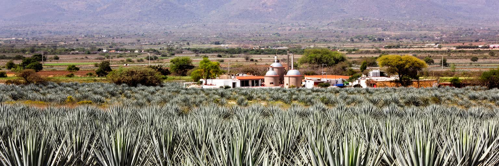
オアハカの名を世界に広げるもののひとつがメスカルです。アガベ畑、蒸し焼き、発酵、蒸留、家族経営の小さな蒸留所、バー、輸出市場が、都市と農村を結びます。旅行者は試飲や蒸留所見学を楽しみますが、メスカルは単なるおしゃれな酒ではありません。栽培には長い年月がかかり、土地、水、薪、労働、品種の保全、価格変動が生産者の生活に関わります。人気が高まれば収入の機会が増える一方、過剰生産、土地利用の変化、野生アガベへの圧力、ブランド化による利益の偏りも起こり得ます。都市のバーやショップで高値で売られる瓶の背後に、村の栽培者や蒸留者へ十分な対価が戻るかは重要です。アガベが成熟するまでの年月は、急な需要増にすぐ応えられない時間でもあります。認証や輸出の言葉を誰が使えるのかは、小規模生産者にとって切実です。観光客が蒸留所を訪ねることで、村の道路、説明役、試飲の作法、写真撮影の許可も新しい課題になります。メスカル文化を読むには、味や香りだけでなく、畑、山、薪、共同体の規則、認証制度、観光客の購買行動を合わせて見る必要があります。オアハカ市はその販売と語りの中心になり、農村は素材と技術を支えます。都市の洗練された消費と、農村の長い時間が同じ一杯に入っています。メスカルは、オアハカの文化経済がどれほど広い地域に支えられているかを示す飲み物です。
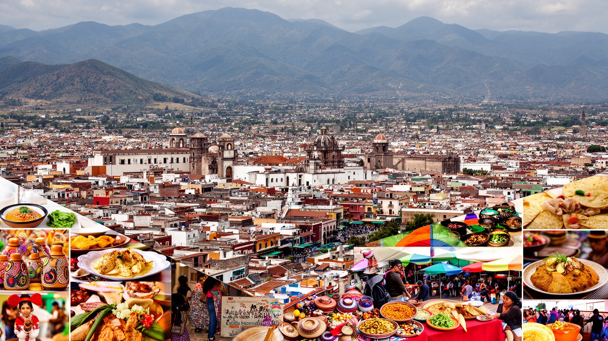
オアハカは、旅行者にとって非常に魅力が分かりやすい都市です。旧市街の石造りの街路、モレの香り、市場の色彩、工芸、死者の日、モンテ・アルバン、メスカルは、短い滞在でも強い記憶を残します。しかし、その魅力は都市だけで完結していません。周辺村の先住民文化、農地、山、言語、祭礼、手仕事、移住の経験が、都市の中心部へ流れ込んでいます。観光は文化を可視化し、収入を作りますが、住宅価格、物価、公共空間、祭礼の私的な時間、工芸品の価格決定に影響を与えます。水不足や地震のリスクも、華やかな観光イメージの背後にあります。オアハカを読む鍵は、美しさを否定することではなく、その美しさを誰が支え、誰が負担を引き受けているかを見ることです。市場で食材を売る人、工房で染める人、村から通う学生、死者の日の準備をする家族、古い建物を修復する職人、家賃上昇に悩む住民が同じ都市の一部です。訪問者にとっての快適な街路と、住民にとっての通勤、買い物、通学、祈り、サッカー観戦、夜の音楽の場所は同じ空間にあります。その重なりを意識すると、名所の見え方も変わります。旅行前に期待した美しさと、現地で見える労働や生活の複雑さを結びつけるほど、都市理解は深まります。オアハカは文化の宝庫であると同時に、文化が観光商品になる時代の緊張をよく見せる都市です。街の魅力は、その緊張を含めて見たときに現実味を増します。